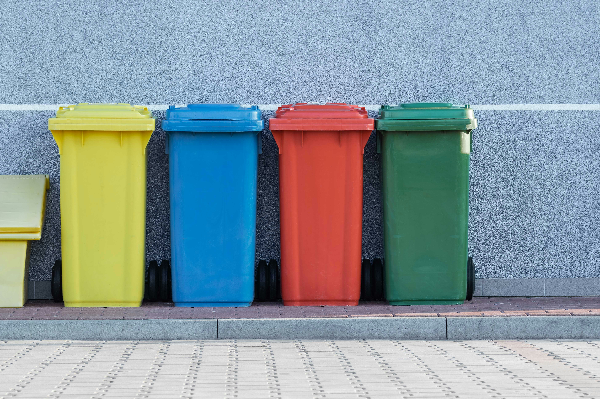

Pulihkan Hutan Gundul, Wujudkan Bumi Bebas Sampah
Evriwanken berdedikasi mengembalikan ekosistem hutan kritis di Indonesia sekaligus membangun sistem daur ulang sampah terpadu demi masa depan yang berkelanjutan.

Kenali Evriwanken
Kerusakan hutan dan krisis sampah adalah dua ancaman terbesar bagi ekosistem kita saat ini. Evriwanken mengambil aksi nyata melalui pendekatan terpadu dari akar masalah.
1. Reboisasi Hutan Kritis
Jutaan hektar hutan hilang akibat pembalakan liar dan kebakaran. Kami memulihkan kawasan hutan yang gundul dengan menanam bibit pohon lokal berkelanjutan untuk mengembalikan habitat satwa dan mencegah bencana alam.
2. Pengelolaan dan Daur Ulang Sampah
Penumpukan sampah yang tidak terkelola mencemari tanah dan lautan. Kami menghadirkan sistem daur ulang terpadu serta edukasi pemilahan sampah dari tingkat rumah tangga.
Program Unggulan Kami
Inisiatif berkelanjutan yang kami jalankan bersama relawan dan komunitas lokal.

Adopsi Pohon
Dukung penanaman dan pemeliharaan pohon di hutan gundul secara berkala lengkap dengan sistem koordinat pemantauan digital.

Bank Sampah Komunitas
Fasilitas pengumpulan dan pemilahan sampah anorganik warga untuk langsung disalurkan ke mitra pabrik daur ulang terpercaya.

Edukasi dan Upcycling
Pelatihan pembuatan kompos organik dan pengolahan kreatif sampah plastik menjadi barang bernilai ekonomi bagi masyarakat.